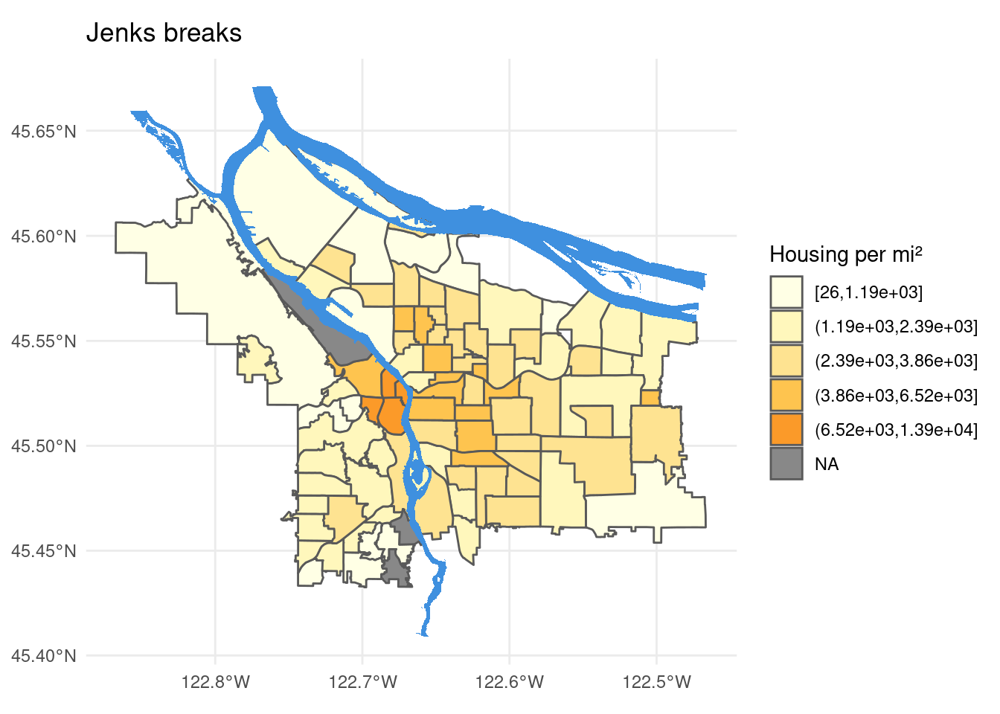

For this assignment we were meant to investigate some geographic data and plot it on a map of Portland. I was particularly interested in the housing data, and wondered if the housing density would be interesting.
The first step is reading in Portland GIS’s data and reading in housing data.
pdx_boundaries <- st_read('data/Neighborhoods__Regions_-shp/')
river_boundaries <- st_read(
'data/Willamette_Columbia_River_Ordinary_High_Water-shp/'
)
housing <- read_excel(
"data/Census_2010_Data_Cleanedup.xlsx",
sheet = "Census_2010_Neighborhoods",
range = 'A6:CW101'
) %>%
select(
'Neighborhood' = starts_with('NEIGHBOR'),
'Total_Housing' = 'H0010001',
'Area' = 'AREALAND'
) %>%
mutate(Area = Area/2589988) %>%
mutate(Housing_Per_Mi = Total_Housing/Area)
# rename census neighborhoods
housing <- housing %>% mutate(Neighborhood=recode(Neighborhood,
"ARGAY" = "ARGAY TERRACE",
"BROOKLYN" = "BROOKLYN ACTION CORPS",
"BUCKMAN" = "BUCKMAN COMMUNITY ASSOCIATION",
"CENTENNIAL" = "CENTENNIAL COMMUNITY ASSOCIATION",
"CULLY" = "CULLY ASSOCIATION OF NEIGHBORS",
"CENTENNIAL" = "CENTENNIAL COMMUNITY ASSOCIATION",
"DOWNTOWN" = "PORTLAND DOWNTOWN",
"GOOSE HOLLOW" = "GOOSE HOLLOW FOOTHILLS LEAGUE",
"HAYDEN ISLAND" = "HAYDEN ISLAND NEIGHBORHOOD NETWORK",
"HOSFORD-ABERNETHY" = "HOSFORD-ABERNETHY NEIGHBORHOOD DISTRICT ASSN.",
"IRVINGTON" = "IRVINGTON COMMUNITY ASSOCIATION",
"LLOYD DISTRICT" = "LLOYD DISTRICT COMMUNITY ASSOCIATION",
"NORTHWEST DISTRICT" = "NORTHWEST DISTRICT ASSOCIATION",
"OLD TOWN-CHINATOWN" = "OLD TOWN COMMUNITY ASSOCIATION",
"PARKROSE HEIGHTS" = "PARKROSE HEIGHTS ASSOCIATION OF NEIGHBORS",
"PEARL" = "PEARL DISTRICT",
"SABIN" = "SABIN COMMUNITY ASSOCIATION",
"SELLWOOD-MORELAND" = "SELLWOOD-MORELAND IMPROVEMENT LEAGUE",
"SOUTHWEST HILLS" = "SOUTHWEST HILLS RESIDENTIAL LEAGUE",
"SUMNER" = "SUMNER ASSOCIATION OF NEIGHBORS",
"SUNDERLAND" = "SUNDERLAND ASSOCIATION OF NEIGHBORS",
"WILKES" = "WILKES COMMUNITY GROUP"
))
boundaries_with_housing <- left_join(
pdx_boundaries,
housing,
by=c("NAME"="Neighborhood")
) %>%
arrange(Housing_Per_Mi)
Once the data is all there, all that’s left is to find a pleasing break point for the color fills and making the map!
num_breaks <- 5
df <- boundaries_with_housing %>%
rename('hpm' = 'Housing_Per_Mi')
jenks.interval <- classIntervals(
df$hpm,
n = num_breaks,
style = 'jenks'
)$brks
boundaries_with_housing$hpm.jenks = cut(
boundaries_with_housing$Housing_Per_Mi,
breaks = jenks.interval,
include.lowest = TRUE
)
paul_tol <- c(
'#ffffe5',
'#fff7bc',
'#fee391',
'#fec44f',
'#fb9a29',
'#ec7014',
'#cc4c02',
'#993404',
'#662506'
)
boundaries_with_housing %>%
ggplot() +
theme_minimal() +
geom_sf(aes(fill = hpm.jenks)) +
geom_sf(data=river_boundaries, fill="#3f90df", size=0.0) +
scale_fill_manual(
values = paul_tol,
na.value = '#888888',
name = 'Housing per mi²'
) +
ggtitle('Jenks breaks')
ggsave('jenks_breaks.png')

I am curious why the small corner just north of the bend in I-84 (Maywood Park) is never filled in in these maps, but also isn’t marked as NA!